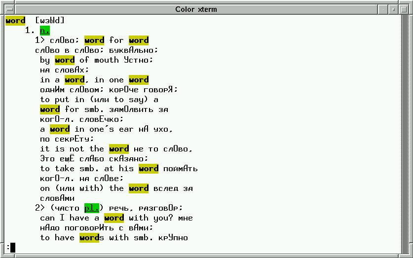
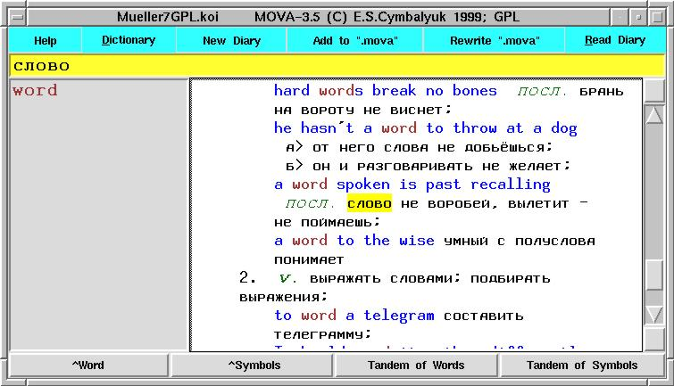
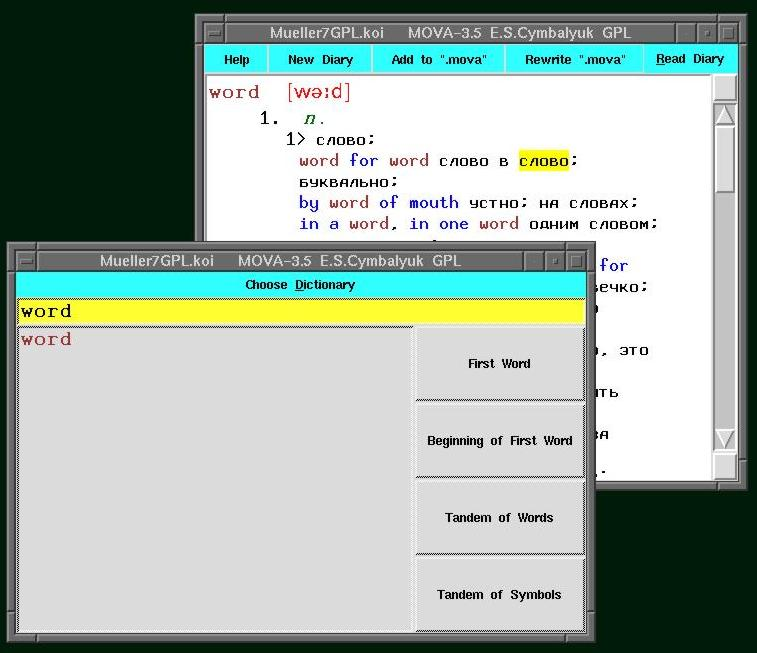
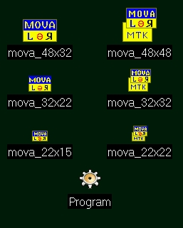

Теперь у нас есть Мюллеровский словарь с транскрипцией и под GNU GPL!
Последние изменения сделаны 28.02.2001
Новая версия (4.0) скриптов.
Исправлены ошибки при работе в консоли. Добавлена возможность выбора словаря
из меню, выбора из меню файла Diary, поиска внутри словарной статьи,
выход по Esc.
Место дефолтного расположения файлов изменилось как требует FHS (File
Hierarchy Standard).
Изменился формат .movarc (из-за изменения структуры каталогов).
Словари остались без изменений, но место дефолтного расположения изменилось
как требует FHS.
Словарь Мюллера 7-го издания под GNU GPL (версия 1.2) с транскрипцией и файлом хешей
Словарь Мюллера 7-го издания под GNU GPL (версия 1.2) с транскрипцией, c ударениями в русских словах и файлом хешей
Словарь Мюллера 24-го издания (версия 1.6) с файлом хешей
В новых версиях Tcl/TK (8.3.1 и 8.3.2) существуют проблемы с русским языком. Советую использовать старые (8.0.5, например).
geocities - English mirror of this site
Англо-русский
словарь Мюллера и программы для его использования в UNIX
Я давно ощущал неудобство при работе в Linux из-за отсутствия
серьёзного англо-русского словаря. И хотя число доступных в Интернете
словарей постоянно растет
(ссылки на
известные мне словари) мне хотелось иметь словарь с поиском словосочетаний
(и не только с начала словарной статьи), с транскрипцией слова и примерами
его употребления.
При этом с самого начала существовала уверенность, что для Линукса не нужны
шифрованные словари (любое шифрование или упаковка замедляла поиск в моих
экспериментах) и все шифрованные базы данных (и патентованные интерфейсы)
--- просто следствие непродуманности современного законодательства об
авторских правах, так-как ухудшает качество конечного продукта и мешает
конкуренции в написании обслуживающих программ. Кроме того, мне совершенно
непонятно почему нельзя купить электронную версию словаря за цену близкую к
цене бумажного словаря (если учесть, что себестоимость бумажного издания
намного выше) или в придачу к бумажному. Из-за этого создание оболочек к
шифрованным словарям я считаю тупиковым путем.
В CD-сборник "Библиотека в Кармане", начиная с четвертой версии,
входит словарь Мюллера в кодах ASCII 24-го издания. К сожалению,
без транскрипции. Я взял на себя смелость переделать его в более удобную для
Unix форму.
При более детальном изучении русского интернета оказалось, что существует
электронная версия словаря Мюллера (7-ое издание) с транскрипцией, сделанная
Сергеем Старостиным, и сейчас свободно распространяемая. С разрешения Сергея
Старостина, я сделал из его словаря новую электронную
версию словаря Мюллера.
Для работы со словарями предлагаю написанные мною скрипты для bash
и Tcl/TK под названием
"MOVA".
Замечания и предложения по улучшению посылайте Евгению Цымбалюку
на e-mail:
[email protected].
Сообщайте, пожалуйста, так же об опечатках и ошибках найденных в самих
словарях (особенно в 7-ой редакции). Буду очень признателен за сообщения
о ссылках на другие словари под Unix для русского-украинского-белорусского
языков. Я с удовольствием выложу на страницу альтернативные пакеты работы
с словарями в формате MOVA.
Выражаю свою признательность людям, общение с которыми позволило улучшить
словарь и скрипты: Дмитрию Мищенко, Владимиру Ставринову, Виталию
Московкину, Стасу Англеру, Сергею Гаврилову, Игорю Готсу, Дмитрию Галкину,
Вячеславу Федорову, Валерию Горелову, Денису Серебро, Сергею Винницкому,
Евгению Бырганову, Павлу Курносову, Андрею Комечу. Михаилу Тентюкову.
Особая благодарность Виктору Вагнеру за ответы на вопросы по
использованию Tcl/TK.
29.7.99 Виталий Московкин прислал
скрипт на shell,
который форматирует результаты поиска так, чтобы их понимал groff
(он умеет подсвечивать русские слова при работе в shell и
форматирует вывод в зависимости от номера варианта перевода).
04.12.99 Игорь Готс прислал скрипты для разделения словаря на маленькие файлы (по первой букве) и
поска в таком словаре. Этот метод может ускорить поиск по первому слову
словарной статьи при ограниченных размерах оперативной памяти (32 MB).
16.6.2000 Вячеслав Федоров ([email protected])
предлагает набор PHP3 скриптов
для работы с Мюллеровскими словарями. Скрипты могут отображать
транскрипцию и проводят поиск по словарю с разными опциями,
смотри скриншот.
19.7.2000 Андрей Комеч прислал скрипт для
перекодирования словарей в DICT формат. Последнюю версию этого скрипта
можно найти на его странице странице.
Там же лежит готовый словарь Мюллера 24 издания в формате dict.
9.11.2000 Михаил Тентюков прислал доработанный
movaTK скрипт 3.4 версииc
возможностью поиска по выведенной в окно словарной статье и решением
некоторых проблем руссификации Tcl/TK 8.3.1.
26.01.2001 Дмитрий Юсупов прислал консольную програму написанную на С.
Она делает специальный хэш для словаря и позволяет работать со словарем
Даля и Апресяна. Поиск идет по первому слову словарной статьи.
Последнию версию этой програмы вы можете найти на странице автора.
Описание формата словаря Мюллера, Издание 7. Под GNU GPL.
В первой строке словарного файла обозначены авторские права на словарь:
(C) V.K.Mueller English-Russian Dictionary, 7 Edition;
"State Publishing House of Foreign and National Dictionaries" Moscow 1961;
Free Electronic Version by S.Starostin 1996 starling.rinet.ru/download/dict.exe;
Electronic Version by E.S.Cymbalyuk 1999 under GNU GPL, ver. 1.2, see latest version on www.chat.ru/~mueller_dic or www.geocities.com/mueller_dic
Исходная электронная версия словаря Мюллера 7-ой редакции свободно доступна
на странице
Сергея Старостина (под названием dict.exe).
Во время юридического разбирательства между фирмой "ABBYY" и
издательством "Русский Язык" выяснилось, что издательство
"Русский язык" имеет права только на издания после 1961 г.,
а до того никаких прав на ограничение его распространения ни у кого нет.
Как обладатель авторского права на вышеуказанную (dict.exe)
электронную версию словаря Мюллера, Сергей дал мне разрешение на
его переработку. Я разрешаю использовать мое электронное
представление словаря Мюллера под GNU GPL,
в закрытых проектах пользуйтесь версией Сергея :-)
Словарь зарегистрирован в депозитарии электронных изданий НТЦ
"ИНФОРМРЕГИСТР" 29 февраля 2000 г. и ему присвоен номер
государственного учета 0320000030.
Во второй строке кратко описан формат словаря на английском, а в третей
превод на русский (затем идут пояснения к сокращениям).
Формат словаря Каждая словарная статья представляет собой строку.
Два пробела отделяют английское слово от его перевода.
Русские буквы кодируются в koi8-r.
A stress in a Russian word is coded by a capital letter.
Транскрипция в формате IPA показывается в квадратных скобках.
Различные значения одного слова индексируются латинскими или арабскими цифрами с предшествующим подчеркиванием. Например, _I-_VII, 1.-6., 1>-34>, а>-о>.
Служебные слова начинаются с символа "_" и завершаются символом "." или ":".
Формат словаря максимально приближен к исходному (книжному) форматированию
текста словаря.
Для авторов программных оболочек, в которых нужно отделять переводимое слово
в словарной статье от его перевода (пояснения) введен разделитель --- два
пробела подряд.
Мной введен один служебный символ --- "_" (он был выбран, так как в
обычных текстах словарей он не встречается и в регулярных выражениях
Unix не играет специфической роли). С этого символа начинаются
все служебные слова,
причем слова, обозначающие употребление в разных областях знания,
русские, а грамматические служебные слова --- английские. Все служебные
слова заканчиваются точкой или двоеточием. Список сокращений добавлен
в начало файла словаря, после строки с авторскими правами.
С символа "_" начинаются также римские цифры, обозначающие разные значения
основного переводимого слова (чтобы отличить от употребления буквы "I" в
предложениях и в сносках на другие слова). Словарная статья может разбиваться
на подразделы цифрой с точкой и/или русской буквой со скобочкой ">" (я заменил
обычную скобку ")" на ">", для более точной работы автоматического
форматирования).
В исходном словаре Сергея Старостина особым образом кодировалось
ударение в русских словах. Чтобы не потерять эту информацию в данной
версии все русские ударные буквы превращены в заглавные. При правильно
настроенной русской локали это позволит проводить поиск по русским словам
без учета регистра. Доступна версия и с нормальным использованием русских букв.
Транскрипция выделятся скобочками "[" и "]". Символы транскрипции
соответствуют стандарту IPA (International Phonetic Alphabet).
Основные английские фонетические символы,
"a" from "man" --- Q, 81
"w" --- W
"a" from "past" --- A, 65
":" from a: in "past" --- 249, 0xF9
"e" from "her" --- 171, 0xAB
"e" first from diphthong in "care" --- E, 69
"o" from "wash" --- 141, 0x8D
"a" from "son" --- 195, 0xC3
"i" короткое "i" from "ink" --- I
"i" длинное "i" from "machine" --- i
"'" ударение голосом --- 200, 0xC8
"," понижение голоса --- 199, 0xC7
"k" --- H
"z" --- Z, 90
"ng" --- N, 78
"sh" --- S, 83
"th" с голосом --- D, 68
"th" без голоса --- T, 84
Большинство маленьких английских букв не изменили своего
положения. Главная неприятность в использовании IPA
стандарта --- нельзя сделать один фонт содержащий и русские
и английские буквы и фонетические символы (разве только UNICODE).
К тому же на месте "-", "(", ")" находятся другие символы и для нормальной
работы их приходится удалять (хотя в обычных бумажных словарях
они используются вперемешку с символами транскрипции).
Словарь (версия 1.2) вместе с файлом хешей
можно скачать в виде tar.gz архива. Тот же словарь с
ударениями в русских словах можно найти здесь.
Каждый пакет занимает по 2.6 Mb.
recode_dic.c
--- программа на C для перекодировки словаря в другие русские
кодировки (с сохранением транскрипции в Sil-IPA).
Все вопросы, замечания и предложения присылайте Евгению Цымбалюку на
[email protected]
"MOVA" --- скрипты для работы со словарями в формате "MOVA"
Предлагаемые скрипты используйте на условиях GNU GPL.
Скрипты используют стандартные утилиты UNIX - grep, sed, fmt, а для
работы в консоли еще и groff, less. Они проводят поиск в текстовом файле
и выводят найденные строчки в графическую оболочку. Плюсы такого механизма
работы:
1) возможность поиска в словаре по словосочетаниям и без учета регистра (и
не только по первому слову)
2) простота программы, легкость ее модификации и отладки
3) большая скорость работы (основные задержки приходятся на загрузку
словарного файла в оперативную память с жесткого диска и при работе графического
интерфейса)
Обратите внимание на размер оперативной памяти: если памяти достаточно
(например, 64 Mb при использовании fvwm2), то повторные вызовы словаря
намного быстрее первого, так как текст словаря остается в дисковом кэше и сразу
становится доступными по мере надобности (исключается медленное копирование
словаря с жесткого диска в оперативную память). Но работа при 32 Mb (при поиске
без хеширования) практически невозможна (так как страницы со словарем быстро
вытесняются на диск из оперативной памяти - при этом каждый новый запуск поиска
включает чтение словаря с жесткого диска, что приводит к 1-2 с ожидания
результата, но если начинает работать swap (при работе поиска), то время
ожидания становится намного больше).
Сейчас movaTK и movaMTK использует хеширование при поиске слов
сначала словарной статьи (опции -W и -B), это позволяет
пользоваться словарем (с данными опциями) при меньших размерах ОЗУ. Словари
отхешированы по первым двум буквам словарной статьи и хранятся в файле с
названием словаря и добавлением к его названию слова ".hash". Цифра
идущая за двухбуквенным сочетанием в строчке из файла хеша означает порядковый
номер байта на котором кончается блок в котором все словарные статьи начинаются
с данного двубуквенного сочетания. Если запросить поиск слова для которого нет
хешированного двубуквенного начала, то включается обычный поиск (без
использования хеша). К сожалению, маленький (а иначе индексирование не дает
выигрыша) индексный файл получается при индексировании по ограниченному числу
слов. Если же нужно иметь возможность поиска по всем словам словарной статьи (и,
особенно, словосочетаниям), то хеширование не дает никакого выигрыша IMHO.
Основная работа по поиску строк и форматированию выполняется bash
скриптом - mova . В коммандной строке скрипту можно задать опции поиска,
слово или последовательность слов для поиска и, в конце, полный путь к файлу
словаря, в котором производится поиск. При этом, он будет искать слово сначала
словарной строки (опция "-W"), первую часть слова сначала словарной
строки (опция "-B"), последовательность слов внутри словарной строки
(опция "-S", можно использовать как русско-английский словарь),
последовательность символов (включая пробелы) внутри словарной строки (опция
"-T"). Затем найденные строки пропускаются через sed фильтр,
который добавляет к каждой словарной статье пустую строчку и форматирование по
вариантам значения слова. В консоли лучше использовать аналогичные опции со
строчными буквами (при этом подключается groff и less фильтры, а
невидимые в koi8-r символы транскрипции перекодируются в видимые) см.
screenshot

. Обычно, mova в X-ах
не используется самостоятельно, а вызывается из Tcl/Tk скриптов -
movaTK, см. screenshot

movaMTK использует другой способ вывода информации в окна (он удобнее,
если нужно оставить на экране перевод ранее найденых слов, хотя работает
медленнее). См. screenshot

movaTK и movaMTK раскрашивают в красный цвет транскрипцию и
подставляют соответствующий фонт для символов между квадратными скобками.
Голубым отмечаются английские слова, зеленым и наклонным шрифтом - служебные
(грамматические еще выделяется жирным шрифтом). Слово или буквы поиска
выделяются коричневым цветом. Часть словарной статьи до двух пробелов выделяется
шрифтом FONT_FIND (этот же шрифт используется в желтой строчке ввода и
для выделения слова в сером окне истории поиска).
Выйти из movaTK и movaMTK можно нажав "Esc"
Над и под скролбаром находятся квадратные кнопочки - с их помощью можно
искать выделенное мышкой слово в уже выведенной словарной статье.
Напомню, как работают с этими оболочками. Слово или слова выделяются мышкой
(при этом лишние пробелы не мешают). Затем из xterm или встроенной
кнопкой (для fvwm2 отредактируйте файл .fvwm2rc в своей
директории) запускается соответственный Tcl/Tk скрипт. Например, так
DestroyMenu "Utilities"
AddToMenu
"[email protected]@^white^"
+ "Mueller7%mova_32x22.xpm%" Exec
movaTK -W Mueller7GPL.koi&
+ "Mueller7 M%mova_32x32.xpm%" Exec movaMTK
-W Mueller7GPL.koi& Оболочками можно пользоваться и без мышки. Для этого
введите слово для перевода вручную в верхней (желтой) строке. При этом поиск с
опцией "-W" запускается нажатием клавиши "Enter"; "-B" -
"Shift-Enter"; "-S" - "Ctrl-Enter"; а "-T" -
"Alt-Enter".
Еще один важный управляющий скрипт: mova_sendTK. С его помощью можно
послать выделенную мышкой строчку на перевод в первое открытое окно
movaTK для каждого словаря. Если открытого окна movaTK для
Mueller7GPL.koi нет, то будет запущена новая movaTK для этого
словаря. Запускать mova_sendTK нужно с опциями для поиска, аналогичными
для movaTK и mova. Если Вы хотите иметь возможность запускать
поиск в словаре из любой программы на десктопе нажатием клавиш на клавиатуре, то
добавьте в Ваш .fvwm2rc следующие строчки:
# Now some keyboard shortcuts.
#Keys for Mueller's dictionary
Key
z A M Exec mova_sendTK -W &
Key В A M Exec mova_sendTK -W &
Key
x A M Exec mova_sendTK -B &
Key Ъ A M Exec mova_sendTK -B &
Key
a A M Exec mova_sendTK -S &
Key Т A M Exec mova_sendTK -S &
Key
s A M Exec mova_sendTK -T &
Key Ш A M Exec mova_sendTK -T &
После перезапуска X-ов Вы получите возможность вызывать поиск
выделенного мышкой слова в movaTK нажатием Alt-a (для поиска с
опцией -S), Alt-s (для поиска с опцией -T), Alt-z
(для поиска с опцией -W), Alt-x (для поиска с опцией -B).
Если клавиатура будет в koi8-r кодировке, то соответствующие клавиши будут
работать также. Причем клавиши с Alt будут работать в любом месте
десктопа и из окон большинства программ. Если запущенного movaTK нет, то
нажатие этих клавиш запустит новый movaTK. Сечас mova_sendTK
посылает указание переводить выделенное слово/слова извесным мне словарям
(доступным в Интернете в формате "MOVA"). Список словарей для запуска находится
в теле скрипта.
Иногда, wish не хочет посылать данные в уже открытую программу и
говорит, что у него проблемы с секретностью. Попробуйте выполнить
xauth
add :0 . `mcookie`
и затем добавьте в персональный .xserverrc
exec X :0 -auth ~/.Xauthority
и перезапустите X-ы
Словари, скрипты, настроечные файлы и описания размещаются согласно FHS
(File Hierarchy Standard) - в /share/dict/, /share/mova/,
/share/doc/mova/. При этом существует точка привязки всех используемых
директорий (внутри скриптов это переменная DIR=/usr/local/). Точку
привязки можно изменить в настроечных файлах - .movarc" или
.movarc_СЛОВАРЬ помещенных в домашнем каталоге или в DIR/share/mova/
или теле скрипта (при отсутствии настроечных файлов). Для инсталяции пакета
скопируйте запакованный файл в корневую директорию "/" и выполните
команды:
tar -xzf Mueller7GPL.tgz
tar -xzf script_mova.tgz
Для словарей с транскрипцией нужно добавить Sil-IPA шрифты в
XF86Config:
FontPath "/usr/X11R6/lib/fonts/sil_ipa/"
Родной
сайт
(http://www.sil.org/computing/fonts/encore-ipa.html) Sil-IPA
шрифтов имеет еще и набор TrueType фонтов. Данные фонты
распространяются под особой Free лицензией и для коммерческого
использования нужно договариваться с авторами фонтов отдельно.
Все установки шрифтов и используемый по умолчанию словарь меняются в начале
файла Tcl/Tk скриптов: в movaTK и movaMTK:
set
FONT_FIND -*-*-bold-r-*-*-17-*-*-*-*-*-koi8-r
set FONT_TEXT
-*-*-medium-r-*-*-17-*-*-*-*-*-koi8-r
set FONT_D
-*-*-medium-o-*-*-17-*-*-*-*-*-koi8-r
set FONT_DG
-*-*-bold-o-*-*-17-*-*-*-*-*-koi8-r
set FONT_IPA
-*-silsophiaipa-*-r-*-17-*-*-*-*-*-*-*
set DIR /usr/local/
set DIR_TMP /tmp/
set DIC Mueller7GPL.koi
Можно также
сделать отдельный файл настроек в домашнем каталоге с названием
".movarc", тогда будут считываться установки из этого файла. Если при
запуске mova или movaTK/movaMTK в коммандной строке не указано
название словаря, то по умолчанию будет запускаться поиск в словаре с именем
DIC. Пример соответствующего ".movarc",
-*-*-bold-r-*-*-20-*-*-*-*-*-*-koi8-r
-*-*-medium-r-*-*-20-*-*-*-*-*-koi8-r
-*-*-medium-o-*-*-20-*-*-*-*-*-koi8-r
-*-*-bold-o-*-*-21-*-*-*-*-*-koi8-r
-*-silsophiaipa-*-r-*-20-*-*-*-p-*-*-*
/usr/local/
/tmp/
Mueller7GPL.koi
Для индивидуальной настройки словарей, скажем для словарей европейских языков
в ".movarc_СЛОВАРЬ" (где СЛОВАРЬ - имя файла словаря) нужно
выставить подходящие фонты для FONT_FIND. Пример соответствующего
".movarc__СЛОВАРЬ",
-*-*-bold-r-*-*-20-*-*-*-*-*-*-1
-*-*-medium-r-*-*-20-*-*-*-*-*-koi8-r
-*-*-medium-o-*-*-20-*-*-*-*-*-koi8-r
-*-*-bold-o-*-*-21-*-*-*-*-*-koi8-r
-*-silsophiaipa-*-r-*-20-*-*-*-p-*-*-*
/usr/local/
/tmp/
И ".movarc" и ".movarc__СЛОВАРЬ" можно положить в директорию с
настройками всего пакета - DIR/share/mova/. Они будут использоваться при
отсутствии соответствующих файлов в домашней директории.
В самой верхней голубой строчке находятся кнопки:
Help - при
нажатии выведится русский текст с краткой инструкцией по использованию оболочек.
Dictionary - выбор активного словаря. Открыть меню можно щелчком
мышки или нажатием Alt-d
New Diary - при нажатии на эту
клавишу слово отмеченное мышкой становится именем текущего Diary файла.
Add to Diary - добавляет содержимое окна вывода словарной статьи в
конец текущего файла Diary.
Rewrite Diary - сохраняет текст в
окне вывода словарной статьи в текущем файле Diary (по умолчанию это
.mova) в домашнем каталоге пользователя. Предыдущее содержимое этого
файла будет уничтожено.
Read Diary - можно выбрать Diary для
вывода в окно. Открыть меню можно щелчком мышки или нажатием Alt-r
В директории DIR/share/mova/icons/ находятся иконки, специально
сделанные для данного пакета, поместите их в директорию используемую windows
manager для хранения иконок. mova_22x15.xpm; mova_32_22.xpm; mova_48x32 -
для movaTK, а mova_22x22.xpm; mova_32_32.xpm; mova_48x48 - для
movaMTK. См. screenshot

Вы можете скачать последнию версию (версия 4.0) скриптов на
www.chat.ru/~mueller_dic/script_mova.tgz или
www.geocities.com/mueller_dic/script_mova.tgz.
20.7.99 Дмитрий Мищенко предупреждает пользователей FreeBSD, что
команда fmt имеет в ней другие ключи (изменения должны быть внесены в
mova: "fmt -s -w 45" нужно заменить на "fmt 45".
6.10.99 Игорь Готс предлагает возможность сохранения всех переведенных за
день слов в специальном log файле. Для этого в файле mova замените:
&/g'|fmt -s -w 45;}
на
&/g'|fmt -s -w 45|tee -a
/tmp/Mueller.`date|sed 's/[ ].*//g'`.log;}
Не забудьте вычищать старые
логи каждую неделю :-)
Все вопросы, замечания и предложения присылайте Евгению Цымбалюку на
[email protected]
{kind=link}